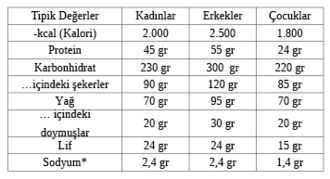

Beslenmeyle İlgili Önemli Bilgiler
KİLONUZA DİKKAT EDİYORSANIZ veya belli türde yağlı, ilave şekerli ve tuzlu yiyeceklerde -aşırıya kaçıldığında kalp krizi, diyabet ve kanser gibi sorunlara yol açan- kesinti yapmak istiyorsanız yapabileceğiniz en iyi şey ürün etiketini okumaktır. Günümüzde hemen her ambalajda içerikle ilgili bilgi verilse de bunların çoğu akıl karıştırıcı olabiliyor. Anlaması en kolay olanlar kırmızı, turuncu ve yeşil renkli etiketler ama pek çok gıda şirketi ve süpermarket raflarında kırmızı uyarı sembolü taşıyan ürünler istemediği için bunları kullanmakta direniyor. Şaşılacak bir şey değil tabii ki…
Gıda etiketleri konusunda sizlere yol göstermek amacıyla hazırlanan aşağıdaki bölümde, özellikle nelere dikkat etmeniz gerektiğini anlamanıza yardımcı olacak temel bilgileri bulabilirsiniz.
Kılavuz Günlük Miktarlar (GDA’lar)
GDA’lar ortalama cüsseli, sağlıklı bir yetişkin ya da çocuğun belli bir yiyecek türünden veya besin maddesinden günde ne kadar tüketmesi gerektiğini belirten resmi önerilerdir. Aşağıdaki tabloda temel besinlerle ilgili bilgileri bulabilirsiniz:

Yağlarla ilgili önemli bilgiler
l Herhangi bir türde yağın bir gramı 9 kalori içerir. Bu da protein ve karbonhidratlarda bulunanın yaklaşık iki katıdır. Yağlar tokluk hissi yaratır, yağı azaltmak kilo vermenin etkili bir yoludur.
l Yağ oranı yüksek besinler arasında peynir, tereyağı, kırmızı et, turtalar, kekler ve şekerlemeler yer alır.
l Vücudumuz hücre ve hormon üretiminde kilit öneme sahip besinsel yağa ihtiyaç duyar. Yağ tüketiminde GDA, kadınlar ve çocuklar için 70 gr, erkekler için 95 gr’dır. Ancak bazı yağların diğerlerinden daha yararlı olduğu düşünülür.
l Tekli doymamış yağlar farklı yiyecek gruplarında bulunur ve kalp sağlığı, kan şeker seviyelerinin düzenlenmesi açısından yararlıdır.
l Çoklu doymamış yağlar esas olarak bitki temelli yiyeceklerde bulunur ve tekli doymamış yağlar gibi kalp sağlığı için yararlıdır.
l Doymuş yağlar esas olarak hayvanlardan gelir. Bunlar vücudumuz için gerekli olsa da yüksek miktarda tüketimi kan kolesterol seviyesini yükseltebilir ve bu da kalp krizi riskini arttırabilir. Doymuş yağ ayrıca işlenmiş gıdalarda sıkça kullanılan palmiye yağında ve Asya ile Karayip yemeklerinde kullanılan hindistancevizi yağında bulunur. Günlük önerilen doymuş yağ miktarı, erkekler için 30 gr, kadınlar içinse 20 gr’dır. Orta büyüklükte (300 gr) domuz etli bir öğünde yaklaşık 30 gr, bir paket düğme çikolatada (32 gr) ise 20 gr doymuş yağ vardır.
l Trans yağların doymuş yağlardan daha zararlı olduğu yönünde çeşitli kaygılar mevcut. Trans yağlar hayvansal yağlarda küçük miktarlarda bulunur ama biz bu yağların çoğunu bisküvi ve kek gibi işlenmiş gıdalardan alırız. Trans yağlar sıvı yağı katıya dönüştüren “hidrojenleme” işleminin bir yan ürünüdür. Trans yağların gıda etiketlerinde yer alması gerekmez ama hidrojenlenmiş yağların bu zorunluluğu vardır. Dolayısıyla alışverişte buna dikkat edin. Süpermarketlerin çoğu sağlık konusundaki endişeler yüzünden trans yağları artık ürünlerinden kaldırdı. Aslında İngiltere’de trans yağları günlük kılavuz miktarı olan 5 gr’dan az tüketiyoruz ve kaygılar da daha çok bisküvi ve kek gibi bol miktarda ucuz, işlenmiş gıda yiyenlere yönelik.
Tuzla ilgili önemli bilgiler
l Beslenmede yüksek miktarda tuz alımı, yüksek tansiyona yol açar ki bu da kardiyovasküler hastalıklarla bağlantılıdır.
l Günlük önerilen tuz alımı yetişkinler için 6 gr’dır (yaklaşık bir tatlı kaşığı dolusu).
l Bazı ürün etiketlerinde tuz içeriğinden çok sodyum belirtilir. Bunu tuza çevirmek için 2,5 ile çarpın.
l “Tuzu azaltılmış” ürünlerin standart üründen sadece % 25 daha az tuz içermesi yeterlidir. Dolayısıyla normali zaten tuzluysa…
l Bazı gıdalar bariz biçimde bol tuzludur. Örneğin, cipsler, tuzlu kuruyemişler, tuzlu suya yatırılmış yiyecekler… Ancak hazır gıdalarda tuz seviyelerini anlamak kolay olmayabilir. Örneğin, 400 gr’lık konserve kuru fasulye yetişkinler için önerilen günlük miktarın neredeyse yarısını içerir.
Şekerle ilgili önemli bilgiler
l Şeker karbonhidratın bir formudur ve birkaç farklı çeşidi vardır. Bunların bazıları meyve ve süt ürünlerinde bulunur, bazıları keklere, tatlılara ve içeceklere eklenir. Dikkat etmemiz gereken, bu işlenmiş gıdalarda bulunan rafine şekerdir çünkü aşırı miktarda alındığında obeziteye ve onunla bağlantılı sağlık risklerine zemin hazırlar.
l Gıda etiketleri -tam tahıllılar veya baklagiller gibi daha sağlıklı bir formda olsa bile- sadece karbonhidrat miktarı belirtildiğinde şeker içeriği anlaşılamadığı için akıl karıştırıcı olabilir. Dengenin ne olduğunu anlamak istiyorsanız, “karbonhidratlar, içindeki şekerler” ibaresine dikkat edin.
Yüksek mi, düşük mü?
Gıda etiketlerinde besin değerleri genelde 100 gram başına düşen miktar olarak belirtilir ki bunun pek faydası yoktur. Aşağıdaki tablo sağlıklı seçenekleri bulmanıza yardımcı olmak için basitleştirildi.
Vitaminler ve mineraller
Sağlıklı bir yetişkinseniz ve çok çeşitli besinler tüketiyorsanız takviye almanıza gerek olmadığı söylenebilir. D vitamini esas olarak cildimizin güneş ışığına verdiği tepkiyle üretildiğinden (bkz. Öğle Yemeği),
beslenmeyle yeterince alamayacağımız tek vitamindir. Ancak yemek seçenler ve buğday, süt ürünleri, kırmızı et veya balık gibi besinleri tüketmeyenlerin temel besin maddelerinden yoksun kalmamak için takviye almaları gerekir.
Vitamin ve mineral alımı için AB’nin resmi günlük önerilen miktarları mevcuttur ama bunlar gebe ve emziren kadınlar, altı yaş altı çocuklar, 65 yaş üstü kişiler ve belli bazı rahatsızlıkları olanlar için değişiklik gösterir. Bu kişilerin hekimlere veya ebelere danışmaları gerekir. Kahvaltı başlığı altında spesifik takviyeler hakkında daha fazla bilgi bulabilirsiniz, ayrıca nhs.uk sitesinden de vitamin ve mineraller ile ilgili kapsamlı bir tabloya ulaşabilirsiniz.